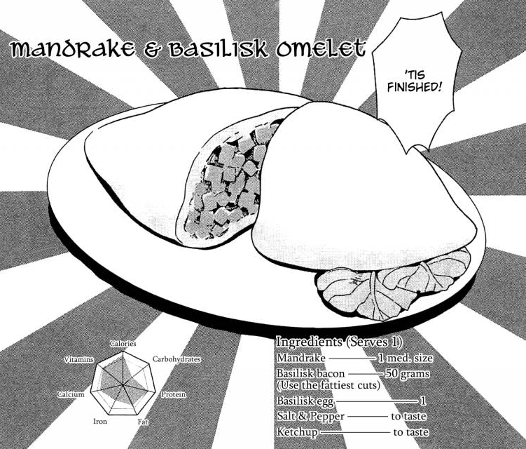

Mandrake and Basilisk Omelet

A fluffy Basilisk egg omelet filled with minced Basilisk bacon and mandrake. If the mandrake used was killed
with it's "head" still attached, it will be less bitter and more mellow.
Ingredients
- Mandrake (1 med. size)
- Basilisk bacon (use the fattiest cuts) (50 grams)
- Basilisk egg (1)
- Salt and pepper (to taste)
- Ketchup (to taste)
Method
- Mince the mandrake into tiny pieces.
- Fry it thoroughly using bacon fat.
- Add in the basilisk egg.
- Cook it until it's fluffy
- Enjoy!